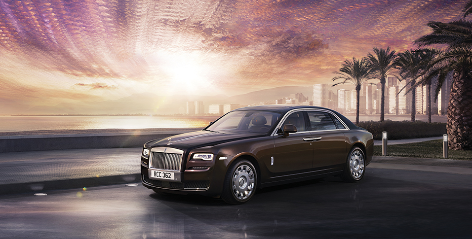

Rolls Royce Ghost is one of the models of the Rolls Royce super luxury vehicles lines. It masters in the outer appearance of the car.
The ethos of Ghost is simplicity and every detail has a timeless elegance and purity. The classic 2:1 proportions of the wheel to body height ensure Ghost Series II is a Rolls-Royce through and through. However, the new design at the front adds more focus and edge. The LED headlights have an instantly recognisable shape, which is beautifully framed by the daytime running lights. This powerful look is accentuated with the subtle sculpting of the bumper while the chrome finishes on the lower grille create a contemporary feel. New 21" wheels are available making a bold statement. You can choose from five different designs, each with its own special character. Every one features a unique self-righting wheel centre that always correctly displays the Rolls-Royce monogram.

Step into Ghost Series II and take control. The modern finishes and the contrast leather highlights instantly create a dynamic feel. With the Spirit of Ecstasy Rotary Controller you can access directions, the internet or music and even scribe letters onto the touchpad with a mere swipe of your finger, ensuring nothing distracts you from the pleasure of driving. The redesigned seats with thigh support have been carefully sculpted to ensure you are in the perfect position and the controls are at your fingertips for effortless driving. Wherever your journey takes you.

The simple, contemporary interior of Ghost comes with comfort built into every inch. From the luxurious lambswool floor mats, right through to the cashmere-blend or optional leather covered roof lining above you, this is a space to enjoy. Carefully sculpted seats that are gently angled towards each other provide even more comfort. To keep you alert and refreshed on even the longest journeys, you can choose to add the massage or ventilation option. Should you desire even more space, Ghost Extended Wheelbase gives you an extra 17 cm of legroom to stretch out and work or just relax and enjoy the drive.